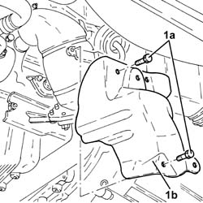
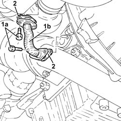

1084B42 ENGINE OIL RETURN PIPE FROM TURBO - R + R
- Path
- Procedures > 10 ENGINE UNIT > 1084 ENGINE LUBRICATION SYSTEM > 1084B ENGINE OIL LUBRICATION CIRCUIT > 1084B42 ENGINE OIL RETURN PIPE FROM TURBO - R + R
- Kind
- repair procedure (removal / refitting; the operation number is the code)
- Applies to
- engines: 1.9 JTD 16V; all production periods
- Interactive page
- https://sloeber94.github.io/elrnDB-aGt/en/#/125001163
Applies to: engines: 1.9 JTD 16V; all production periods
 Removing
Removing
 Refitting
RefittingPosition the vehicle on a lift.
Proceed with the removal
Op. 7055B54 UNDER-ENGINE GUARD - R R.
1. Undo the bolts (1a) and remove the lower heat shield (1b) for the exhaust pipe.

Applies to: engines: 1.9 JTD 16V; all production periods
1. Undo the bolts (1a) and remove the turbocharger engine oil return pipe (1b).
2. Remove the seals.

Applies to: engines: 1.9 JTD 16V; all production periods
Refitting
RemovingPosition the turbocharger engine oil return pipe in its housing complete with gaskets and secure it using the bolts.
Place the lower exhaust pipe heat shield in its housing and secure it using the bolts.
Proceed with the refitting
Op. 7055B54 UNDER-ENGINE GUARD - R R.
Remove the vehicle from the lift.